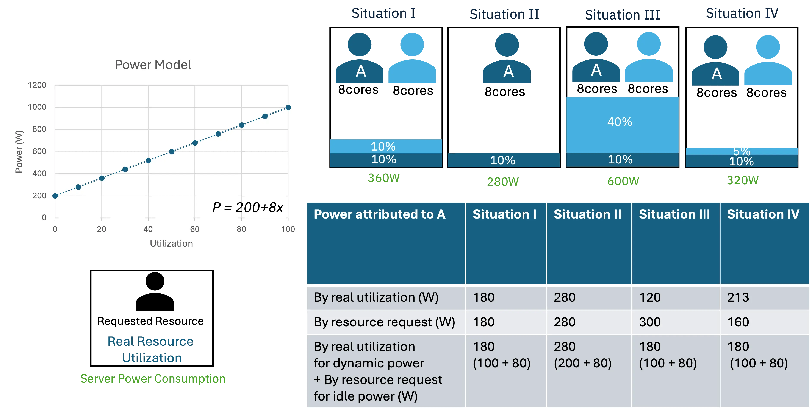

Idle Power Matters: Kepler Metrics for Public Cloud Energy Efficiency
Authors: Sunyanan Choochotkaew, Marcelo Amaral, Huamin Chen
Originally published on the CNCF TAG ENV blog on 2024-06-06.
⚠️ Note: Kepler 0.10 attributes only active power to workloads and reports idle power per node. Bringing back idle power separation is tracked in Idle power separation for all power interfaces (kepler#2470).
Idle power is the type of power where active compute is not occurring, and includes static power and that consumed by control plane processes. Idle power attribution is challenging in public cloud environment where computation is shared among multiple tenants. It's contribution to the total power for a node is significant and can range from 20% to 60% of the power at maximum utilization. This blog post aims to highlight the importance of transparent, fine-grained energy metrics that distinguish between idle and dynamic power in software energy attribution within public cloud computing. Kepler addresses this need by providing a solution that attributes idle power separately from dynamic power in multi-tenant environments.
Measuring Sustainability in Software
According to the International Energy Agency (IEA) in Data Centres and Data Transmission Networks segment, global data centre electricity consumption is estimated to be around 1-1.3% of global final electricity demand in 2022, with an annual growth rate of 20-40% over the past several years. The EU Energy Efficiency Directive (EED) will require data centres in the EU with an installed capacity greater than 500 kW to report their total energy consumption starting from May 2024.
The Green Software Foundation (GSF) is a non-profit organization formed under the Linux Foundation as a trusted ecosystem for green software building. It has defined a new standard for calculating the rate of carbon emissions for software systems, known as Software Carbon Intensity (SCI). This specification has achieved ISO standard status in Q1 2024, marking a major milestone in the journey towards green software building.
The SCI value is calculated using the following equation:
SCI = ((E * I) + M) per R
Where:
- E – Energy consumed by a software system
- I – region-specific carbon Intensity
- M – embodied eMissions of the hardware needed to operate a software system
- R – functional unit, a Reference unit for comparison.
This standard allows for the use of granular data. This type of data could range from information for datacenters, individual machines (e.g., VM/Node), individual services (e.g., API call or ML training run), packs of execution (e.g., pod or container), or single processes.
Energy consumption represents the cumulative power usage over a period of time. Regarding power calculations for multi-tenant environments of VMs, the Greenhouse Gas Protocol (GHG) provides the following specific guidelines:
P(vm) = U(vm) ⋅ Size(vm) ⋅ P(dyn) + P(base)/n
This equation refers to the one found on page 6-34 of ICT Sector Guidance built on the GHG Protocol Product Life Cycle Accounting and Reporting Standard`
Where:
- P(vm) - power consumption of the VM
- U(vm) - utilization of the VM
- Size(vm) - size of the VM
- P(dyn) - dynamic power range of the device
- P(base) - Idle, or base, power consumption is when the VMM is operating but no VMs are executed on the system
- n - the number of VMs running on the server
To achieve greener software, we need to reduce power consumption, and the SCI scores, during the design, development, and delivery of applications.
Idle Power: The Hidden Energy Cost of Software in Public Cloud Computing
In 2019, RightScale's survey revealed that over 94% of 800 organizations had adopted cloud computing, with 31% prioritizing public cloud and 54% planning to migrate their workloads to the public cloud within 12 months to become more resource efficient. Accenture's report in 2020 highlighted that public cloud migration can lead to a substantial reduction in carbon emissions (up to 84%) and energy consumption (up to 64%).
The public cloud operates as a multi-tenant environment where users purchase computational resources shared among numerous clients. Various tools, such as CodeCarbon, CarbonTracker, Scaphandre, and Kepler, are available for estimating energy consumption and carbon emissions associated with code execution wrapping or real-time resource utilization observation.
However, determining how to attribute power consumption for infrastructure services remains challenging. The GSF's SCI standard specifies that energy consumption should encompass all energy consumed by reserved or provisioned hardware, not solely the hardware used while an application is running. This includes idle power, encompassing not only static power but also the energy consumed by items necessary to be functional for the application to run such as the kubelet or the control plane.
According to the SPECpower benchmark, active idle power consumption can vary widely, ranging from 20% to 60% of the power consumed at maximum utilization. In absolute terms, this ranges from 100Watts to 1300Watts, equivalent to the power consumption of a classic light bulb or an air conditioner in a household (although there are differences in carbon emissions). The idle power can be even higher when considering GPU power consumption.
The Importance of Idle power accounting and Transparency
The differentiation between idle and dynamic power has been widely investigated in the research literature [1]. Most current tools for measuring application power consumption often neglect this distinction. It is crucial to isolate idle power from dynamic power for reasons including fair attribution of power consumption to applications and to help create more accurate power models.
Dynamic energy consumption is directly correlated to resource use. On the other hand, idle power is the base power consumption that occurs regardless of resource utilization. A power model that uses resource utilization to estimate power consumption will only accurately reflect dynamic power. Idle power, is a constant power consumption that must be attributed to all running applications.
To illustrate the idea of fairly distributing idle energy, think of a condominium where owners pay a homeowners association (HOA) fee regardless of whether they use their homes. Larger homes in the condo might pay higher fees, just as virtual machines (VMs) with more resources allocated or applications with more processes should bear a greater portion of idle power usage.
Kepler, through careful tracking of idle and dynamic energy, promotes a fairer distribution of power usage and refines power consumption models. In Kepler, the aggregate of the consumption of idle and dynamic power is referred to as absolute power consumption.
To further illustrate the importance of transparency in idle power attribution, refer to the following example. By resource request refers to the OpenCost specification where workload costs are computed by max(request, usage).

Suppose we have a server with a linear power model for a 16-core server X, described by a simple formula as simple as below where Idle=200 and Coeff=8:
Power Consumption (P) = Idle Power (Idle) + Dynamic Power Consuming Factor (Coeff) * Resource Utilization (x)
Let's analyze the estimated energy consumption shown in the figure above. We will consider a server hosting two clients or applications that request the same amount of resources but utilize them differently in various scenarios. We'll also examine a scenario with just one client for comparison.
- Situation I - two clients requested and used the same amount of resource
In the first situation, both Client A and Client B use 10% of the node's CPU (so that each client uses 50% of the total utilization) and the total power consumption of the node is 360W. Since both clients use and request the same amount of resources, any split of energy consumption will be fair here. Then, using the fraction of resource consumption of each client (50%) and multiplying by the absolute energy consumption, 180W is associated with each client.
- Situation II - one client was evicted
In the second situation, Client B was evicted, leaving Client A alone on the server. Here, the total node power is 280W, which is entirely allocated to Client A. This power is based on the power model, where the idle power is 200W. As shown in the first situation, the dynamic power of two applications using 20% of the node CPU was 160W, which means each client had a dynamic power consumption of 80W. Therefore, since Client A is still consuming 10% of the CPU in the second situation, its dynamic power consumption remains at 80W.
- Situation III - new client with higher resource utilization
Now consider a third situation with uneven resource utilization: Client A still uses 10%, but Client B now uses 40% of the node's CPU. If we only use the node's absolute power consumption of 600W, Client B's resource utilization rate of 80% results in a power consumption of 480W and 120W for Client A. However, If we isolate the idle power of 200W, Client B's power consumption will be 420W (320W for dynamic + 100W for idle) and Client A's power consumption will be 180W (80W for dynamic as it is still using 10% of the CPU + 100W for idle).
- Situation IV - new client with lower resource utilization
The situation IV is similar to the third situation, but Client B is using fewer resources than Client A, further illustrating the potential for unfair distribution of idle power.
In the third scenario, isolating idle power enhances predictability and clarity. This method divides constant power (unaffected by resource use) and defines dynamic power solely based on resource utilization. Specifically, according to the power model, Client A's dynamic power is 80W. By allocating idle power based on resource ratio and absolute power, Client A receives 40W of idle power, while Client B gets 160W. and absolute power, Client A receives only 40W of idle power, leaving Client B with 160W of idle power.
These unequal distributions of idle power highlight unfairness because idle power consumption isn't tied to resource utilization. Applying the power consumption ratio based on resource requests doesn't accurately reflect actual dynamic power consumption corresponding to real resource utilization.
It is difficult to justify giving more idle power to one client over another solely based on resource utilization. A fair distribution of idle power could either account for application size or distribute idle power cost evenly among all applications.
The Challenges of Estimating Idle Power
Now that we understand the importance of isolating and reporting idle power, let's delve into how Kepler addresses the challenge of estimating idle power, especially in cloud environments where certain information, such as the number of co-located virtual machines, may be obscured.
On bare metal, we can estimate idle power by identifying the minimum point of power consumption when server utilization is close to zero [2, 3]. However, we plan to extend this model with regression analysis to find the idle power also in busy systems.
Estimating idle power in virtual private clouds is challenging due to unknown physical specs and the number of tenants (VMs). To address this, we've developed a training framework focused on extracting and training the dynamic power model alone. This approach reduces dependency on unknown factors and enhances energy-efficient optimization for virtual machines [4].
As discussed in our previous blog post [5], we disabled idle power for containers running on VMs. We still need to address the attribution and accounting of idle power. To find a balance, we're developing an approach to estimate VM idle power based on limited information, particularly in scenarios where physical cores are pinned to virtual cores without overprovisioning and the VM emulates the same CPU architecture. For these, we can use a power model trained on similar CPU architectures to estimate VM idle power based on core count. For example, if our model for 64 cores predicts an idle power of 160W, a VM with 8 virtual cores would estimate around 20W (i.e., 160/8).
However, it's important to note that cloud waste, as illustrated in situation II of the example, may still not be fully accounted for at the user level without knowledge of the requested resources of all sharing tenants.
Conclusion
Complete waste accounting at the user level remains a challenge, necessitating further research and collaboration within the industry. Transparent, fine-grained energy metrics for public cloud efficiency remains important, and needs to have challenges addressed such as idle power attribution and estimation. Tools like Kepler pave the way for sustainable cloud computing practices.
Takeaways
-
The SCI standard quantifies the rate of carbon emissions for software systems and promotes granular data usage for sustainability. Collaboration among practitioners is essential to collectively reduce SCI scores during software design, development, and delivery.
-
Transparent energy metrics, such as idle and dynamic power per functional unit provided by Kepler, are essential for promoting sustainable and energy-efficient cloud computing practices.
-
While progress has been made, several issues remain, requiring further research and collaboration within the industry.
Act for Change
- Learn more about Green Software
- Explore Kepler and Try it yourself
- Join the conversation and reach out to us via CNCF Slack #kepler-project
Resources
[1] Guillaume Fieni, Romain Rouvoy, Lionel Seinturier. SmartWatts: Self-Calibrating Software-Defined Power Meter for Containers. IEEE CCGRID 2020. https://ieeexplore.ieee.org/document/9139675
[2] Marcelo Amaral, Huamin Chen, Tatsuhiro Chiba, Rina Nakazawa, Sunyanan Choochotkaew, Eun Kyung Lee, Tamar Eilam. Kepler: A framework to calculate the energy consumption of containerized applications. IEEE CLOUD WIP 2023. https://www.computer.org/csdl/proceedings-article/cloud/2023/048100a069/1QJi0ffK3ug
[3] Marcelo Amaral, Huamin Chen, Tatsuhiro Chiba, Rina Nakazawa, Sunyanan Choochotkaew, Eun Kyung Lee, Tamar Eilam. Process-based Efficient Power Level Exporter. IEEE CLOUD 2024 (in press).
[4] Advancing Cloud Sustainability: A Versatile Framework for Container Power Model Training. IEEE MASCOTS Workshop 2023. https://www.computer.org/csdl/proceedings-article/mascots/2023/10387542/1TKR5vzaWXe
[5] Exploring Kepler’s potentials: unveiling cloud application power consumption, https://www.cncf.io/blog/2023/10/11/exploring-keplers-potentials-unveiling-cloud-application-power-consumption/